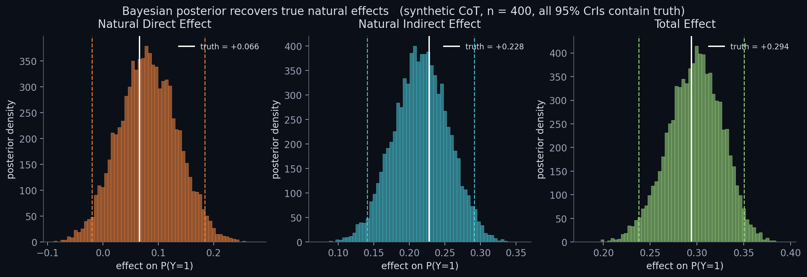

The first Bayesian causal-mediation framework for measuring whether LLM reasoning is faithful or post-hoc rationalization — with calibrated uncertainty for scalable oversight and deception detection.
Plans for overseeing superhuman models assume the written reasoning drives the answer. If CoT is decorative, the oversight signal is fake — and current measurements can't tell you how fake.
A deceptive model can write aligned-looking CoT while the actual computation does something else. Distinguishing this from "the CoT genuinely drives the answer" requires causal — not correlational — analysis with power calculations.
Faithfulness has become load-bearing in AI-control evals. Point estimates without credible intervals can't tell you whether model A is actually more faithful than model B — or whether the difference is sampling noise.
"We measured the faithfulness of CoT reasoning — but we didn't measure how confident we should be in that number. That is the gap."
Import 25 years of causal mediation analysis from epidemiology and econometrics into LLM interpretability. The prompt's effect on the answer decomposes into two paths:
Estimation is hierarchical Bayesian in PyMC. The output is a full posterior distribution, not a point estimate — calibrated credible intervals you can actually use to make deployment decisions.
Why Bayesian: calibrated uncertainty by construction, hierarchical pooling across prompts and seeds, posterior model comparison (Bayes factors, PSIS-LOO) for "is this faithful?" hypothesis tests.
import pymc as pm
with pm.Model() as _model:
alpha = pm.Normal("alpha", mu=0., sigma=1.5)
beta = pm.Normal("beta", mu=0., sigma=2.0)
gamma = pm.Normal("gamma", mu=0., sigma=1.5)
sigma_m = pm.HalfNormal("sigma_m", sigma=1.0)
# mediator equation: M | X
pm.Normal("M_obs", mu=gamma * X,
sigma=sigma_m, observed=M)
# outcome equation: Y | X, M
pm.Bernoulli("Y_obs",
logit_p=alpha * X + beta * M, observed=Y)
trace = pm.sample(1500, tune=1500, chains=4,
target_accept=0.95)Adjust the three coefficients of the data-generating process. The bars on the right update with the implied natural-direct, natural-indirect, and total effects (computed live in your browser via Monte Carlo). The NIE / TE ratio is the faithfulness score.

Controlled ground truth for NDE / NIE / TE; analytic + Monte Carlo verification.
NUTS sampling, weakly informative priors, posterior derived quantities on the probability scale.
PyMC posterior recovers true coefficients within 3 posterior-sd of the truth on every run.
Python 3.10 / 3.11 / 3.12 matrix; ruff lint; fast tests < 3s; slow PyMC test gated behind --runslow.
Identification assumptions, decomposition, connection to causal scrubbing & activation patching.
Next milestone — truncation, paraphrase, segment-swap, interchange interventions on open-source models.
Mediation analysis under interchange interventions. Identification assumptions audited against the LLM setting.
Multi-segment mediator, prompt-level random effects, partial pooling. Done as a gate before any real-LLM spend.
Truncation, paraphrase, segment-swap, interchange. Same API for OSS models (via HuggingFace) and frontier models (via Anthropic / OpenAI APIs).
Llama-3-8B, Gemma-2-9B on GSM8K, BBH, TruthfulQA. ~120 A100-hours on RunPod / Lambda.
Claude Sonnet, GPT-4-class via API. Cross-lab comparison with posterior credible intervals.
Uncertainty-quantified faithfulness benchmark on GitHub. Workshop submission (NeurIPS / AAAI safety). LessWrong post.
Doable on free / personal tier at half rigour and 2× timeline. This budget unlocks publication-quality statistical power.
Maksim Silchenko — just finished a BSc International Business (Hons, First-Class) at Bayes Business School (City, University of London), specialised in AI & Quantitative Methods. Starting MSc Statistics (Business Analytics) at the National University of Singapore in July 2026.
Honest framing: not a CS-degree expert in mechanistic interpretability. What I am is a passionate applied researcher who spends 5–6 hours a day working through statistics and causal inference — from McElreath's Statistical Rethinking to Stanford CS229 / CS230, with a Russian National Mathematics Olympiad win (top 0.015 %) and a Jane Street puzzle win in the foundation. My prior projects show the exact toolkit this work needs: